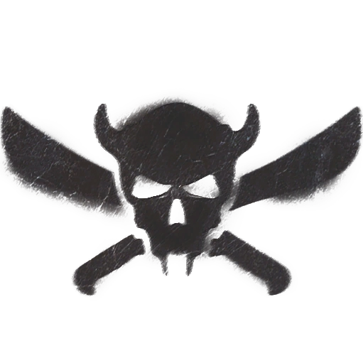
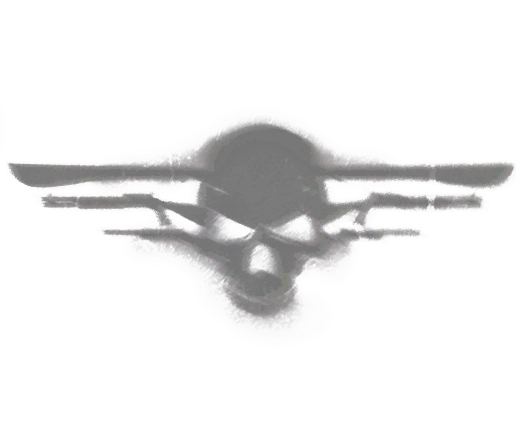

Raiders (繝ｬ繧､繝繝ｼ / Fallout 76)
窶補・@Fallout
繧｢繝代Λ繝√い縺ｮ蜈・･悶Ξ繧､繝繝ｼ縺溘■縺ｯ縲√え繧ｧ繧ｹ繝医ヰ繝ｼ繧ｸ繝九い蜈ｨ蝨溘°繧蛾寔縺ｾ縺｣縺溷・驟ｷ縺ｪ逡･螂ｪ閠・→逶苓ｳ翫・蜷檎屐縺ｧ縺励◆縲ょｽｼ繧峨・蜈・・√き繝・ヨ繧ｹ繝ｭ繝ｼ繝医√ム繧､繝上・繝峨√ヶ繝ｩ繝・け繧ｦ繧ｩ繝ｼ繧ｿ繝ｼ逶苓ｳ雁屮縲√げ繝ｫ繝槭Φ繧ｺ縲√ヨ繝ｩ繝・ヱ繝ｼ縺ｮ5縺､縺ｮ繧ｮ繝｣繝ｳ繧ｰ縺ｧ讒区・縺輔ｌ縺ｦ縺・∪縺励◆縲・
閭梧勹
繧｢繝代Λ繝√い縺ｮ蛻晄悄縺ｮ繝ｬ繧､繝繝ｼ繧ｰ繝ｫ繝ｼ繝励・縲∽ｻ悶・逕溷ｭ倩・ｒ諱先悶↓髯･繧後∵ｬｲ縺励＞繧ゅ・繧剃ｽ輔〒繧ょ･ｪ縺・｡縺ｫ鬟｢縺医◆繧ｵ繧､繧ｳ繝代せ縺溘■縺ｧ縺励◆縲ょｽｼ繧峨・辭溽ｷｴ縺励◆繧ｹ繧ｫ繝吶Φ繧ｸ繝｣繝ｼ縺ｧ縺ゅｊ縲∵立荳也阜縺ｮ謚陦薙ｒ蝗槫庶縺吶ｋ縺薙→縺ｫ髢｢縺励※縺ｯ迢ｬ蜑ｵ逧・〒縺励◆縲ょｽｼ繧峨・谿玖剞諤ｧ縺ｨ蜀ｷ驟ｷ縺輔・縲∝ｽｼ繧峨・蜃ｺ閾ｪ縺ｫ逕ｱ譚･縺励※縺・∪縺吶・
譛繧ょ・譛溘・繝ｬ繧､繝繝ｼ繧ｰ繝ｫ繝ｼ繝励・縲∵怙邨よ姶莠峨↓繧医▲縺ｦ闕偵ｌ縺溷｢・沺縺ｮ繧ｹ繧ｭ繝ｼ繝ｭ繝・ず縺ｫ髢峨§霎ｼ繧√ｉ繧後◆陬慕ｦ上↑隕ｳ蜈牙ｮ｢縺溘■縺ｫ繧医▲縺ｦ邨先・縺輔ｌ縺ｾ縺励◆縲ょｽ灘・縲∝ｯ瑚｣募ｱ､縺ｨ繧ｹ繧ｿ繝・ヵ縺ｯ逅・ｧ逧・↓蟇ｾ蠢懊＠縲∵帆蠎懆ｻ阪↓繧医ｋ謨大勧繧貞ｾ・▲縺ｦ縺・∪縺励◆縲ゅ＠縺九＠縲・騾ｱ髢薙ｂ縺励↑縺・≧縺｡縺ｫ繝ｪ繧ｾ繝ｼ繝医・迚ｩ雉・・蠎輔ｒ縺､縺榊ｧ九ａ縺ｾ縺励◆縲ょｽｼ繧峨・螳壽悄逧・↑驟埼＃縺ｫ萓晏ｭ倥＠縺ｦ縺・◆縺九ｉ縺ｧ縺吶ゅ％繧後↓蟇ｾ蠢懊＠縺ｦ縲∬ｦｳ蜈牙ｮ｢縺溘■縺ｯ謨大勧繧貞ｾ・▽髢薙∫黄雉・ｒ髮・ａ繧九◆繧√↓蝗槫庶髫翫ｒ邨先・縺怜ｧ九ａ縲∬・蛻・◆縺｡縺ｮ謖√■迚ｩ繧偵Μ繧ｾ繝ｼ繝医せ繧ｿ繝・ヵ縺ｮ邂｡逅・ｸ九↓鄂ｮ縺阪∪縺励◆縲・
逕溷ｭ倩・◆縺｡縺ｯ11譛医↓繝√Ε繝ｼ繝ｫ繧ｹ繝医Φ縺ｮ繝ｬ繧ｹ繝昴Φ繝繝ｼ縺ｨ謗･隗ｦ縺励∝勧縺代→迚ｩ雉・ｒ豎ゅａ縺ｾ縺励◆縲ゅ＠縺九＠縲・屮豌代・豬∝・縺ｫ蝨ｧ蛟偵＆繧後※縺・◆蟶ゅ・謖・ｰ手・◆縺｡縺ｯ縲∝ｽｼ繧峨ｒ霑ｽ縺・ｿ斐＆縺悶ｋ繧貞ｾ励∪縺帙ｓ縺ｧ縺励◆縲よ怏諢冗ｾｩ縺ｪ迚ｩ雉・ｒ髮・ａ繧九％縺ｨ縺ｫ螟ｱ謨励＠縺溘％縺ｨ縺ｧ縲∽ｸ闊ｬ謚慕･ｨ縺ｧ驕ｸ蜃ｺ縺輔ｌ縺溽函蟄倩・・繝ｪ繝ｼ繝繝ｼ縲√ワ繝ｼ繝ｩ繝ｳ繝峨・繝槭け繝ｪ繝ｳ繝医ャ繧ｯ縺ｮ蜉帙・蠑ｱ縺ｾ繧翫∪縺励◆縲ゅ＠縺九＠縲∝ご諷｢縺ｪ蟇瑚｣募ｱ､繧呈･ｵ謔ｪ髱樣％縺ｪ繝ｬ繧､繝繝ｼ縺ｸ縺ｨ逵溘↓螟芽ｲ後＆縺帙◆縺ｮ縺ｯ縲・078蟷ｴ縺ｮ蜀ｬ縺ｧ縺励◆縲る剄髮ｪ縺ｨ謾ｾ蟆・・縺ｫ繧医▲縺ｦ髢峨§霎ｼ繧√ｉ繧後・｣滓侭迚ｩ雉・・縺ｻ縺ｼ螳悟・縺ｫ譫ｯ貂・☆繧九∪縺ｧ貂帛ｰ代＠縲∫函蟄倩・◆縺｡縺ｯ莠偵＞縺ｫ莠峨＞蟋九ａ縺ｾ縺励◆縲・
2078蟷ｴ8譛医↓繝ｬ繧ｹ繝昴Φ繝繝ｼ縺後ｈ縺・ｄ縺丞ｱｱ縺ｸ縺ｮ驕蠕・嚏繧帝√▲縺溘→縺阪∝ｽｼ繧峨・逕溷ｭ倩・・謌舌ｌ縺ｮ譫懊※繧堤匱隕九＠縲√◎繧後・譛邨よ姶莠臥峩蠕後・諠ｨ迥ｶ繧堤岼謦・＠縺溯・◆縺｡縺ｧ縺輔∴繧よ＄諤悶＆縺帙ｋ繧ゅ・縺ｧ縺励◆縲ゅョ繝薙ャ繝峨・繧ｽ繝ｼ繝励・縲√◆縺ｨ縺域ｬｲ縺励＞繧ゅ・繧呈焔縺ｫ蜈･繧後ｋ縺溘ａ縺ｫ隱ｰ縺九ｒ雕上∩縺､縺代↓縺吶ｋ縺薙→縺ｫ縺ｪ縺｣縺ｦ繧ゅ√ワ繝ｼ繝ｩ繝ｳ繝峨↓縺ｯ縺ｧ縺阪↑縺九▲縺溷燕騾ｲ縺吶ｋ譁ｹ豕輔ｒ謠千､ｺ縺励∪縺励◆縲ゅ・繧ｯ繝ｪ繝ｳ繝医ャ繧ｯ螟ｫ螯ｻ縺後∝勧縺代↓譚･縺・莠ｺ縺ｮ逕溷ｭ倩・ｒ谿ｺ縺励◆鄂ｪ縺ｧ蠖ｼ繧定｣∝愛縺ｫ縺九￠霑ｽ謾ｾ縺励ｈ縺・→縺励◆縺ｨ縺阪∝ｽｼ繧峨・縺吶〒縺ｫ謨怜圏縺励※縺・∪縺励◆縲ゅワ繝ｼ繝ｩ繝ｳ繝峨ｒ謗帝勁縺励◆蠕後√た繝ｼ繝励・莠ｺ縲・ｒ縲∝鴨縺壹￥縺ｧ谺ｲ縺励＞繧ゅ・繧貞･ｪ縺・・が鬲斐☆繧玖・・隱ｰ縺ｧ繧よｮｺ縺呎＄繧阪＠縺・寔蝗｣縺ｸ縺ｨ螟峨∴縺ｾ縺励◆縲・
蠖ｼ縺ｮ繝ｪ繝ｼ繝繝ｼ繧ｷ繝・・縺ｮ荳九√Ξ繧､繝繝ｼ縺溘■縺ｯ蠕舌・↓繧｢繝代Λ繝√い縺ｧ譛螟ｧ邏壹・邨・ｹ泌喧縺輔ｌ縺滓ｴｾ髢･縺ｸ縺ｨ謌宣聞縺励∪縺励◆縲ょｽｼ繧峨・5縺､縺ｮ繧ｮ繝｣繝ｳ繧ｰ縺ｫ蛻・｣ゅ＠縺ｾ縺励◆・壹き繝・ヨ繧ｹ繝ｭ繝ｼ繝医√ヨ繝ｩ繝・ヱ繝ｼ縲√ム繧､繝上・繝峨√ヶ繝ｩ繝・け繧ｦ繧ｩ繝ｼ繧ｿ繝ｼ逶苓ｳ雁屮縲√◎縺励※繧ｰ繝ｫ繝槭Φ繧ｺ縺ｧ縺吶ゅΞ繧､繝繝ｼ縺溘■縺ｯ荳ｻ縺ｫ縲∬穀繧後◆蠅・沺繧帝夐℃縺吶ｋ辟｡謇螻槭・繝医Ξ繝ｼ繝繝ｼ繧・羅陦瑚・ｒ迯ｲ迚ｩ縺ｨ縺励∝鴨縺壹￥縺ｧ蜈･謇九〒縺阪↑縺・い繧､繝・Β・井ｾ九∴縺ｰ繧｢繝代Λ繝√い縺ｮ B.O.S.縺九ｉ縺ｮ繧ゅ・縺ｪ縺ｩ・峨・諷朱㍾縺ｫ逶励∩蜃ｺ縺励∪縺励◆縲・
2082蟷ｴ縺ｾ縺ｧ縺ｫ縲∝ｽｼ繧峨・謨｣逋ｺ逧・↑陦晉ｪ√→譽ｮ譫怜慍蟶ｯ縺ｸ縺ｮ逕溘〓繧九＞諡｡螟ｧ縺ｯ縲√メ繝｣繝ｼ繝ｫ繧ｹ繝医Φ縺ｮ繝ｬ繧ｹ繝昴Φ繝繝ｼ縺ｨ縺ｮ蟇ｾ遶九ｒ蠑輔″襍ｷ縺薙＠縺ｾ縺励◆縲ゅき繝・ヨ繧ｹ繝ｭ繝ｼ繝医・蜑ｯ蜿ｸ莉､螳倥〒縺ゅｊ縲√Μ繝ｼ繝繝ｼ縺ｧ縺ゅｋ繝・ン繝・ラ繝ｻ繧ｽ繝ｼ繝励・諱倶ｺｺ縺ｧ繧ゅ≠縺｣縺溘Ο繧ｶ繝ｪ繝ｳ繝ｻ繧ｸ繧ｧ繝輔Μ繝ｼ繧ｺ縺後∝ｸゅ・蜊励〒縺ｮ谿句ｿ阪↑陦晉ｪ√〒謐輔ｉ縺医ｉ繧後◆縺ｨ縺阪√Ξ繧ｹ繝昴Φ繝繝ｼ縺ｮ蟶梧悍縺ｮ譏溘・豸医∴縺九￠縺ｾ縺励◆縲よ鋸逡吶＆繧悟ｰ句撫繧貞女縺代◆繧ｸ繧ｧ繝輔Μ繝ｼ繧ｺ縺ｯ繧ｽ繝ｼ繝励→騾｣邨｡繧貞叙繧九％縺ｨ縺後〒縺阪★縲∵ｭｻ莠｡縺励◆縺ｨ諤昴ｏ繧後※縺・∪縺励◆縲よｿ諤偵＠縺溘た繝ｼ繝励・繧ｵ繝槭・繧ｺ繝薙Ν繝ｻ繝繝縺ｸ縺ｮ謾ｻ謦・ｒ蜻ｽ縺倥√◎縺薙〒繝悶Λ繝・け繧ｦ繧ｩ繝ｼ繧ｿ繝ｼ逶苓ｳ雁屮縺・ B.O.S. 縺九ｉ逶励ｓ縺繝溘ル繝ｻ繝九Η繝ｼ繧ｯ繧剃ｽｿ逕ｨ縺励※繝繝繧堤・遐ｴ縺励√け繝ｪ繧ｹ繝槭せ繧､繝悶↓繝√Ε繝ｼ繝ｫ繧ｹ繝医Φ繧呈ｴｪ豌ｴ縺ｧ豐医ａ縺ｾ縺励◆縲ゅ◎縺・☆繧九％縺ｨ縺ｧ縲∝ｽｼ縺ｯ蟾櫁ｭｰ莠句ゅ・迢ｬ謌ｿ縺ｫ髢峨§霎ｼ繧√ｉ繧後※縺・◆繝ｭ繧ｶ繝ｪ繝ｳ繧よｮｺ縺励※縺励∪縺・∪縺励◆縲・
繧ｪ繝ｼ繝繝ｼ繝ｻ繧ｪ繝悶・繝溘せ繝・Μ繝ｼ縺ｨ縺ｮ謌ｦ莠・/h3>
繧ｽ繝ｼ繝励・繝ｬ繧ｹ繝昴Φ繝繝ｼ縺ｫ蟇ｾ縺励※荳譎ら噪縺ｪ蜆ｪ菴阪ｒ蠕励∪縺励◆縺後√◎縺・☆繧九％縺ｨ縺ｧ縺ｾ縺濶ｯ蠢・・蜷肴ｮ九ｒ謖√▲縺ｦ縺・◆螟壹￥縺ｮ繝ｬ繧､繝繝ｼ繧帝□縺悶￠縲√す繝｣繝弱Φ繝ｻ繝ｪ繝舌・繧ｺ邇・＞繧九が繝ｼ繝繝ｼ繝ｻ繧ｪ繝悶・繝溘せ繝・Μ繝ｼ縺ｮ豕ｨ諢上ｒ蠑輔￥縺薙→縺ｫ縺ｪ繧翫∪縺励◆縲ゅΜ繝舌・繧ｺ縺ｯ隍・焚縺ｮ諡轤ｹ繧堤ｯ峨″縲∫函蠕偵◆縺｡縺ｫ險鍋ｷｴ繧呈命縺励∪縺励◆縲・ 謌ｦ莠峨・髟ｷ蠑輔″縺ｾ縺励◆縺後∵怙邨ら噪縺ｫ繧ｪ繝ｼ繝繝ｼ繝ｻ繧ｪ繝悶・繝溘せ繝・Μ繝ｼ縺ｯ蜀・Κ縺九ｉ縺ｮ陬丞・繧翫↓繧医▲縺ｦ螢頑ｻ・＠縺ｾ縺励◆縲ゅが繝ｪ繝薙い繝ｻ繝ｪ繝舌・繧ｺ縺梧ｯ崎ｦｪ縺ｨ繧ｪ繝ｼ繝繝ｼ繧定｣丞・繧翫√Ξ繧､繝繝ｼ縺ｨ謇九ｒ邨・ｓ縺縺ｮ縺ｧ縺吶・ 繧ｪ繝ｪ繝薙い縺ｮ謠蝉ｾ帙＠縺滓ュ蝣ｱ縺ｨ繧ｵ繧､繝輔か繝ｳ繝ｻ繝帙Ο繝・・繝・/a>縺ｮ縺翫°縺偵〒縲√Ξ繧､繝繝ｼ縺ｯ繧ｪ繝ｼ繝繝ｼ縺ｫ蟇ｾ縺励※豎ｺ螳夂噪蜆ｪ菴阪↓遶九■縲∵怙邨ら噪縺ｫ蠖ｼ螂ｳ縺溘■繧貞・貊・＆縺帙∪縺励◆縲ゅ＠縺九＠縲√が繝ｪ繝薙い閾ｪ霄ｫ繧り｣丞・繧峨ｌ縲∵ｮｺ螳ｳ縺輔ｌ縺ｾ縺励◆縲・
闊井ｺ｡
荳譎ゅ√た繝ｼ繝励・蝨ｰ菴阪・逶､遏ｳ縺ｫ隕九∴縺ｾ縺励◆縺後√お繝ｳ繧ｯ繝ｬ繧､繝ｴ縺ｮ髯ｰ隰縺悟ｽｼ縺ｮ豐｡關ｽ縺ｮ縺願・遶九※繧偵＠縺ｾ縺励◆縲・087蟷ｴ縺ｾ縺ｧ縺ｫ縲√ワ繝ｼ繝代・繧ｺ繝ｻ繝輔ぉ繝ｪ繝ｼ縺後せ繧ｳ繝ｼ繝√ン繝ｼ繧ｹ繝医↓髯･關ｽ縺励・a href="scorch.html" class="auto-link">繧ｹ繧ｳ繝ｼ繝・/a>縺ｨ繧｢繝代Λ繝√い縺ｮ B.O.S. 縺後い繝代Λ繝√い蜊鈴Κ繧帝・譁ｭ縺励※縺・◆縺溘ａ縲∵ｪ迚ｩ縺溘■縺ｯ豐ｼ蝨ｰ蝨ｰ蟶ｯ繧帝壹▲縺ｦ闕偵ｌ縺溷｢・沺縺ｫ謚ｼ縺怜ｯ・○蟋九ａ縺ｾ縺励◆縲ゆｸ也阜縺ｮ鬆ゆｸ翫′譛蛻昴↓蟋ｿ繧呈ｶ医＠縺ｾ縺励◆縺後√た繝ｼ繝励・閼・ｨ√ｒ隱崎ｭ倥〒縺阪★縲∝ｯ・函逧・↑豢ｻ蜍輔ｒ邯壹￠繧九→縺・≧閾ｴ蜻ｽ逧・↑繝溘せ繧堤官縺励∪縺励◆縲・
蠖ｼ縺ｮ譛蠕後・驕弱■縺ｯ縲・096蟷ｴ蠕悟濠縺ｫ繝上Φ繧ｯ繝ｻ繝槭ョ繧｣繧ｬ繝ｳ繧呈兜迯・＠縲・a href="scorch.html" class="auto-link">繧ｹ繧ｳ繝ｼ繝・/a>謗｢遏･繧ｷ繧ｹ繝・Β縺ｮ繧｢繝・・繝ｪ繝ｳ繧ｯ縺ｨ蠑輔″謠帙∴縺ｫ繝ｬ繧ｹ繝昴Φ繝繝ｼ縺ｨ繝輔Μ繝ｼ繧ｹ繝・う繝・ 繧定у霑ｫ縺励ｈ縺・→縺励◆縺ｨ縺阪〒縺励◆縲ょｽｼ縺ｯ縺昴・驕弱■縺ｫ蟇ｾ縺励※遨ｶ讌ｵ縺ｮ莉｣蜆溘ｒ謇輔＞縲・a href="scorch.html" class="auto-link">繧ｹ繧ｳ繝ｼ繝・/a>縺後▽縺・↓闕偵ｌ縺溷｢・沺 縺九ｉ繝ｬ繧､繝繝ｼ繧剃ｸ謗・＠縺溘→縺阪∝ｽｼ閾ｪ霄ｫ繧・a href="scorch.html" class="auto-link">繧ｹ繧ｳ繝ｼ繝・/a>縺ｮ荳莠ｺ縺ｨ縺ｪ繧翫∪縺励◆縲ょｽｼ繧峨・繧｢繝代Λ繝√い縺ｮ莉悶・縺ｻ縺ｨ繧薙←縺ｮ豢ｾ髢･繧医ｊ髟ｷ縺冗函縺肴ｮ九ｊ縺ｾ縺励◆縺後√◎繧後・陌壹＠縺・享蛻ｩ縺ｧ縺励◆縲・097蟷ｴ縺ｮ譏･縲∝｣ｫ豌励ｒ螟ｱ縺・・陬ゅ＠縺滓ｮ句・縺ｯ縲・∩髮｣謇繧呈ｱゅａ縺ｦ縺ゅｉ繧・ｋ譁ｹ蜷代↓騾・￡縺ｾ縺励◆縲・
邨・ｹ・/h2>
蜈・･悶Ξ繧､繝繝ｼ縺ｯ縲∽ｸｻ縺ｫ繝・ン繝・ラ繝ｻ繧ｽ繝ｼ繝励→縺ｮ讓ｩ蜉帙→蠖ｱ髻ｿ蜉帙↓蝓ｺ縺･縺・◆邱ｩ繧・°縺ｪ髫主ｱ､讒矩縺ｧ邨・ｹ斐＆繧後※縺・∪縺励◆縲ょｽｼ縺ｮ繝ｪ繝ｼ繝繝ｼ繧ｷ繝・・縲√き繝ｪ繧ｹ繝樊ｧ縲√◎縺励※蜀ｷ驟ｷ縺ｪ迢｡迪ｾ縺輔・縲∵倦謌ｦ閠・ｒ蛻・妙縺励※蠕∵恪縺励√Ξ繧､繝繝ｼ縺ｮ諢丞峙繧貞燕騾ｲ縺輔○繧九％縺ｨ繧貞庄閭ｽ縺ｫ縺励∪縺励◆縲・
- 繧ｫ繝・ヨ繧ｹ繝ｭ繝ｼ繝・ 繝励Ξ繧ｶ繝ｳ繝医・繝舌Ξ繝ｼ縺ｫ繧ｭ繝｣繝ｳ繝励ｒ蠑ｵ繧翫√ョ繝薙ャ繝峨・繧ｽ繝ｼ繝励→蠖ｼ縺ｮ繧ｬ繝ｼ繝ｫ繝輔Ξ繝ｳ繝峨〒縺ゅｋ繝ｭ繧ｶ繝ｪ繝ｳ繝ｻ繧ｸ繧ｧ繝輔Μ繝ｼ繧ｺ縺ｫ繧医▲縺ｦ驕句霧縺輔ｌ縺ｦ縺・◆譛螟ｧ縺ｮ繧ｮ繝｣繝ｳ繧ｰ縺ｧ縺吶ょ・驟ｷ縺ｧ迢｡迪ｾ縺ｪ逕ｷ縺ｧ縺ゅｋ繧ｽ繝ｼ繝励・縲√す繝｣繝ｬ繝ｼ縺ｮ逕溷ｭ倩・◆縺｡縺悟ｽｼ繧偵Μ繝ｼ繝繝ｼ縺ｫ驕ｸ繧薙□蠕後√ワ繝ｼ繝ｩ繝ｳ繝峨・繝槭け繝ｪ繝ｳ繝医ャ繧ｯ繧帝縺代∝ｽｼ繧峨ｒ蠑ｷ蜉帙↑謌ｦ髣倬Κ髫翫↓蜀咲ｷｨ謌舌＠縺ｾ縺励◆縲・
- 繝繧､繝上・繝・ 譛繧よ判謦・噪縺ｧ縺ｪ縺・Ξ繧､繝繝ｼ繧ｮ繝｣繝ｳ繧ｰ縺ｧ縺ゅｋ繝繧､繝上・繝峨・縲∝圏縺ｸ遘ｻ蜍輔＠縲√し繝九・繝医ャ繝励せ繧ｭ繝ｼ蝣ｴ縺ｮ隍・粋譁ｽ險ｭ繧貞頃諡縺励∪縺励◆縲ゆｻ悶・繝ｬ繧､繝繝ｼ縺瑚・蛻・・諤昴＞騾壹ｊ縺ｫ縺吶ｋ縺溘ａ縺ｫ證ｴ蜉帙ｒ菴ｿ縺｣縺溘・縺ｫ蟇ｾ縺励√ム繧､繝上・繝峨・遯・尢縺ｨ閼・ｿｫ繧堤ｵ・∩蜷医ｏ縺帙※繧・▲縺ｦ縺・％縺・→縺励∪縺励◆縲・
- 繝悶Λ繝・け繧ｦ繧ｩ繝ｼ繧ｿ繝ｼ逶苓ｳ雁屮: 繝輔Ξ繝・ぅ繝ｻ繝ｩ繝ｳ繧ｰ縺ｫ邇・＞繧峨ｌ縺溘％縺ｮ繧ｮ繝｣繝ｳ繧ｰ縺ｯ縲√ヶ繝ｩ繝・け繧ｦ繧ｩ繝ｼ繧ｿ繝ｼ驩ｱ螻ｱ繧呈侠轤ｹ縺ｨ縺励※縺・∪縺励◆縲ょｽｼ繧峨・辷・匱迚ｩ繧・㍾轣ｫ蝎ｨ縺ｮ菴ｿ逕ｨ縺ｫ髟ｷ縺代※縺翫ｊ縲∫音縺ｫ B.O.S. 縺九ｉ豁ｦ蝎ｨ繧堤尢繧縺薙→縺ｧ遏･繧峨ｌ縺ｦ縺・∪縺励◆縲・/li>
- 繧ｰ繝ｫ繝槭Φ繧ｺ: 繝｢繝ｪ繧ｹ繝ｻ繧ｹ繝・ぅ繝ｼ繝悶Φ繧ｹ縺ｨ縺昴・螯ｻ繧､繝ｼ繝・ぅ縺ｫ邇・＞繧峨ｌ縺溘げ繝ｫ繝槭Φ繧ｺ縺ｯ縲√・繝ｫ繝医Φ繝ｻ繧ｰ繝ｪ繝ｼ繝ｳ繧ｺ繧呈侠轤ｹ縺ｨ縺励※縺・∪縺励◆縲ょｽｼ繧峨・繧ｫ繝九ヰ繝ｪ繧ｺ繝・磯｣滉ｺｺ・峨ｒ螳溯ｷｵ縺励※縺翫ｊ縲∽ｻ悶・繧ｮ繝｣繝ｳ繧ｰ縺九ｉ繧よ＄繧後ｉ繧後∬ｻｽ阡代＆繧後※縺・∪縺励◆縲・
- 繝医Λ繝・ヱ繝ｼ: 繧ｦ繧ｩ繝ｫ繧ｿ繝ｼ繝ｻ繧ｰ繝ｪ繧ｹ繧ｦ繧ｩ繝ｫ繝峨↓邇・＞繧峨ｌ縺溘ヨ繝ｩ繝・ヱ繝ｼ縺ｯ縲∫ｽ繧・・逋ｺ迚ｩ繧剃ｽｿ逕ｨ縺吶ｋ縺薙→縺ｫ迚ｹ蛹悶＠縺ｦ縺・∪縺励◆縲ょｽｼ繧峨・莉悶・逕溷ｭ倩・ｒ謐輔ｉ縺医◆繧翫∝ｾ・■莨上○縺励◆繧翫☆繧九％縺ｨ繧貞ｾ玲э縺ｨ縺励※縺・∪縺励◆縲・/li>
繝｡繝ｳ繝舌・ & 繝ｭ繧ｱ繝ｼ繧ｷ繝ｧ繝ｳ
闡怜錐縺ｪ繝｡繝ｳ繝舌・: 繝・ン繝・ラ繝ｻ繧ｽ繝ｼ繝暦ｼ医Μ繝ｼ繝繝ｼ・峨√Ο繧ｶ繝ｪ繝ｳ繝ｻ繧ｸ繧ｧ繝輔Μ繝ｼ繧ｺ・医ヱ繝ｼ繝医リ繝ｼ・峨√Ο繝ｼ繧ｺ・医Α繧ｹ繝ｻ繝翫ル繝ｼ・峨√・繝ｼ繧ｸ繝ｼ繝ｻ繝槭け繝ｪ繝ｳ繝医ャ繧ｯ・医ム繧､繝上・繝牙・繝ｪ繝ｼ繝繝ｼ・峨√Χ繧｣繝ｳ繧ｻ繝ｳ繝医・繝輔Λ繧､繝会ｼ医ム繧､繝上・繝画眠繝ｪ繝ｼ繝繝ｼ・峨√ヵ繝ｬ繝・ぅ繝ｻ繝ｩ繝ｳ繧ｰ・医ヶ繝ｩ繝・け繧ｦ繧ｩ繝ｼ繧ｿ繝ｼ逶苓ｳ雁屮・峨√Δ繝ｪ繧ｹ・・う繝ｼ繝・ぅ繝ｻ繧ｹ繝・ぅ繝ｼ繝悶Φ繧ｹ・医げ繝ｫ繝槭Φ繧ｺ・峨↑縺ｩ縲・
荳ｻ縺ｪ繝ｭ繧ｱ繝ｼ繧ｷ繝ｧ繝ｳ: 荳也阜縺ｮ鬆ゆｸ骸譛ｬ驛ｨ]縲∝ｼｾ阮ｬ菫晉ｮ｡蠎ｫ縲√・繝・け繝ｪ繝ｼ縲√け繝ｪ繝輔え繧ｩ繝・メ縲√け繝ｬ繝舌せ繝繝縲√じ繝ｻ繧ｯ繝ｭ繧ｹ繧ｫ繝・ち繝ｼ縲√ヵ繝ｪ繝ｼ繧ｯ繧ｷ繝ｧ繝ｼ縲√リ繧､繝輔お繝・ず縲√Δ繝弱Φ繧ｬ繝ｼ驩ｱ螻ｱ縲√Δ繝弱Φ繧ｬ繝ｼ逋ｺ髮ｻ謇縲√Α繝峨Ν繝槭え繝ｳ繝・Φ繝ｻ繧ｭ繝｣繝薙Φ縲√Μ繝・ヱ繝ｼ繝ｻ繧｢繝ｬ繧､縲√そ繝阪き繝ｻ繧ｮ繝｣繝ｳ繧ｰ縺ｮ繧ｭ繝｣繝ｳ繝励∫ｩ崎ｼ牙ｴ縺ｪ縺ｩ縲・
蜈・･悶い繝代Λ繝√い縺ｮ繝ｬ繧､繝繝ｼ縺ｯ縲∝腰縺ｪ繧区が蠖ｹ髮・屮縺ｧ縺ｯ縺ｪ縺上∵･ｵ髯千憾諷九↓縺翫￠繧倶ｺｺ髢薙・驕灘ｾｳ縺ｮ蟠ｩ螢翫→逕溷ｭ俶悽閭ｽ縺ｮ證ｴ襍ｰ繧呈緒縺・◆謔ｲ蜉・噪縺ｪ蟄伜惠縺ｧ縺吶・br>
蟇瑚｣募ｱ､縺ｮ霆｢關ｽ: 繧ｹ繧ｭ繝ｼ繝ｪ繧ｾ繝ｼ繝医・隕ｳ蜈牙ｮ｢縺ｨ縺・≧縲梧戟縺ｦ繧玖・阪◆縺｡縺後・｣｢縺医→蟇偵＆縺ｫ繧医▲縺ｦ譛繧る㍽陋ｮ縺ｪ縲悟･ｪ縺・・阪∈縺ｨ螟芽ｲ後＠縺ｦ縺・￥驕守ｨ九・縲∵枚譏弱・閼・＆繧堤李辜医↓鬚ｨ蛻ｺ縺励※縺・∪縺吶・br>
蛟区ｧ縺ｮ蠑ｷ縺・ 鬟滉ｺｺ縺ｫ襍ｰ繧九げ繝ｫ繝槭Φ繧ｺ繧・∫・逋ｺ迚ｩ繧呈・縺吶ｋ繝悶Λ繝・け繧ｦ繧ｩ繝ｼ繧ｿ繝ｼ逶苓ｳ雁屮縺ｪ縺ｩ縲∝推繧ｮ繝｣繝ｳ繧ｰ縺碁圀遶九▲縺溽音蠕ｴ繧呈戟縺｣縺ｦ縺翫ｊ縲∝ｽｼ繧峨・谿九＠縺・a href="holotape.html" class="auto-link">繝帙Ο繝・・繝・/a>繧・Γ繝｢繧帝壹§縺ｦ縺昴・迢よｰ励→莠ｺ髢楢・縺輔ｒ霑ｽ菴馴ｨ薙〒縺阪ｋ轤ｹ縺檎ｴ譎ｴ繧峨＠縺・〒縺吶・br>
繧ｹ繧ｳ繝ｼ繝・/a>縺ｨ縺・≧謚励∴縺ｪ縺・ｵらч: 縺ｩ繧後⊇縺ｩ證ｴ蜉帙ｒ讌ｵ繧√※繧ゅ∫ｵ仙ｱ縺ｯ繧｢繝代Λ繝√い蜈ｨ蝨溘ｒ隕・≧繧ｹ繧ｳ繝ｼ繝・/a>逞・→縺・≧轣ｽ螳ｳ縺ｮ蜑阪↓縺ｯ辟｡蜉帙〒縺ゅｊ縲∵怙蠑ｷ縺ｮ繝ｪ繝ｼ繝繝ｼ縺ｧ縺ゅ▲縺溘ョ繝薙ャ繝峨・繧ｽ繝ｼ繝励〒縺吶ｉ諤ｪ迚ｩ縺ｫ謌舌ｊ譫懊※縺ｦ縺励∪縺｣縺溽ｵ先忰縺ｯ縲∬劒縺励＆縺ｨ諱先悶ｒ諢溘§縺輔○縺ｾ縺吶・
This article uses material from the Fallout wiki at Fandom and is licensed under the Creative Commons Attribution-Share Alike License.